長期トレンド
JKMとJEPXシステムプライスの推移グラフ
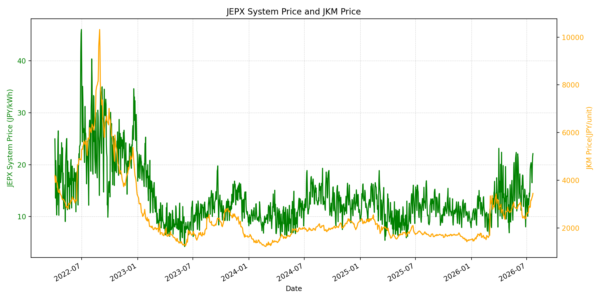
WTIの推移グラフ
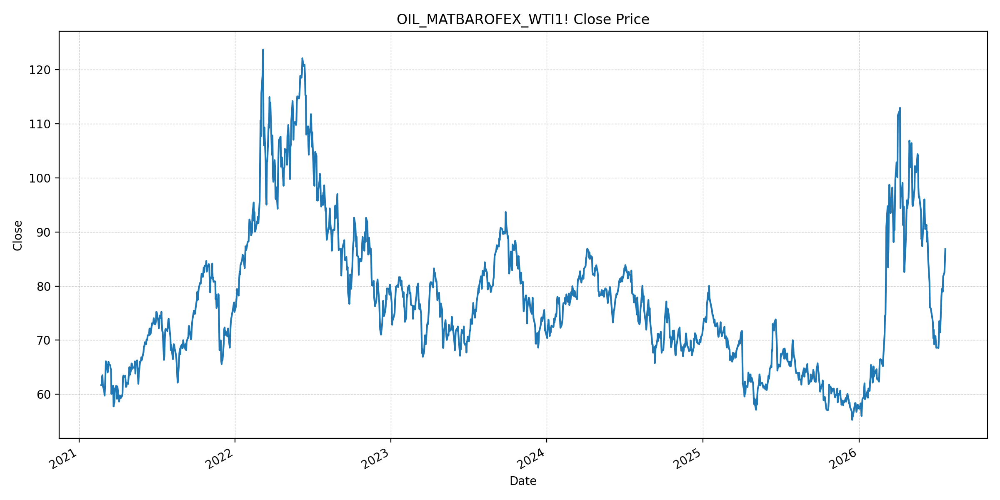
JEPXエリアプライスグラフ（直近一年分）
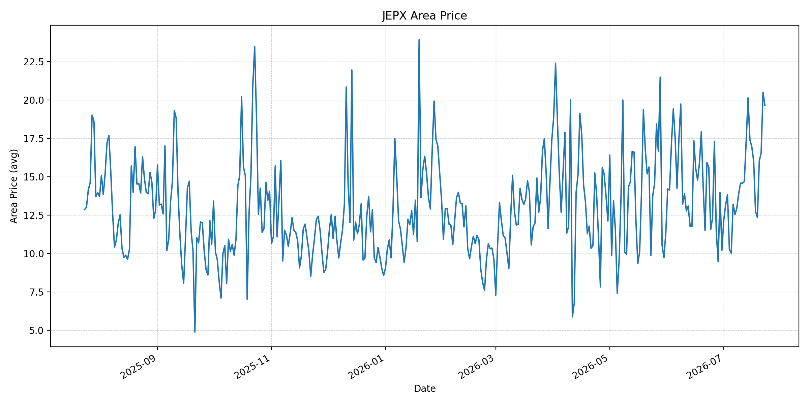
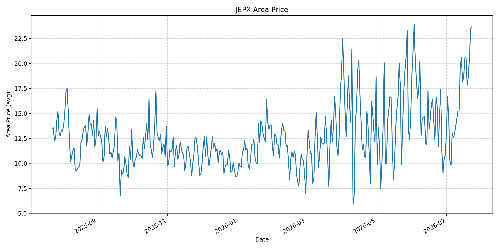
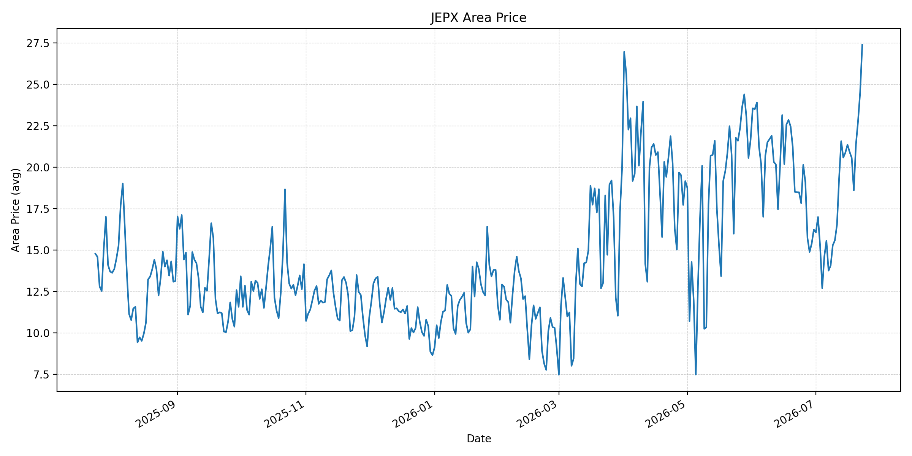
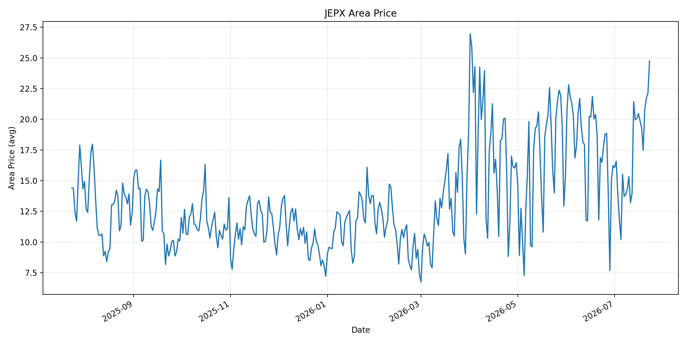
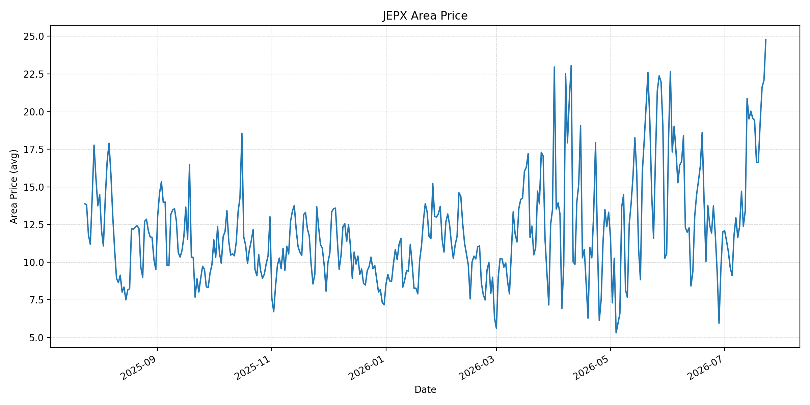
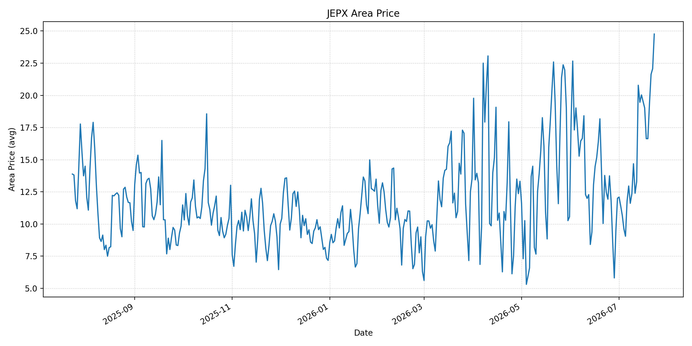
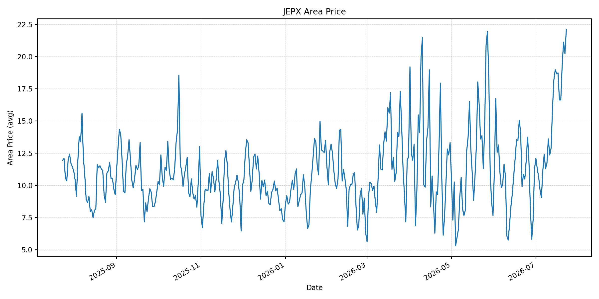
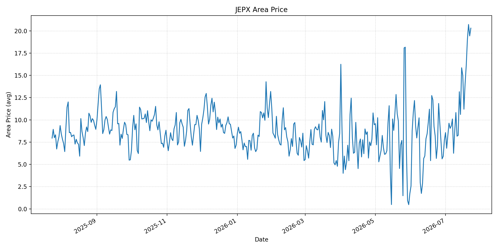
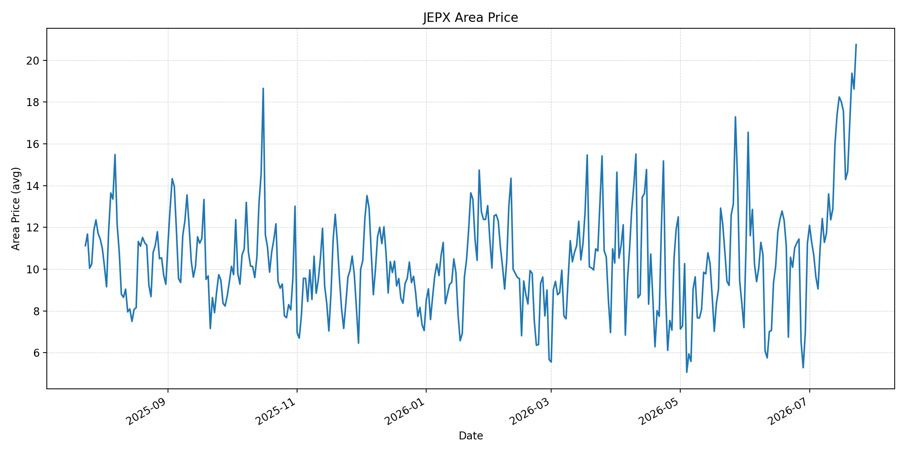
短期トレンド
JKMとJEPXシステムプライスの推移グラフ
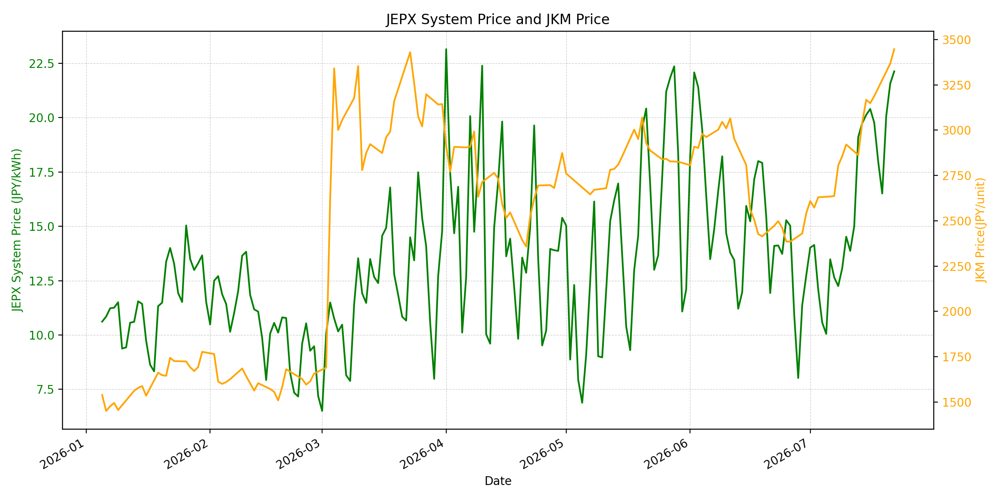
WTIの推移グラフ
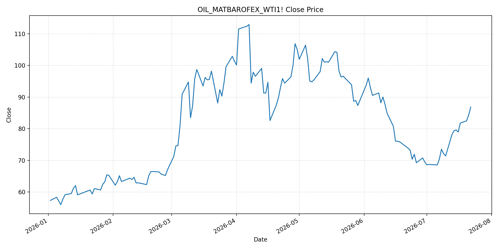
JEPXシステムプライス
JEPXは受渡日ベースの最新非空値で評価しています。最新値は 2026-07-23 分です。先週終値は 2026-07-16 時点の直近値、先月終値は 2026-06-30 時点の直近値で評価しています。
| エリア | 当日価格 | 前日価格 | 前日比（％） | 先週終値 | 先週比（％） | 先月終値 | 先月比（％） | 過去最高値 | 最高値比（％） |
|---|---|---|---|---|---|---|---|---|---|
| システム | 24.78 | 22.13 | 11.97 | 20.40 | 21.47 | 12.73 | 94.66 | 64.06 | -61.32 |
| 北海道 | 19.66 | 20.49 | -4.05 | 16.95 | 15.99 | 10.21 | 92.56 | 73.92 | -73.40 |
| 東北 | 23.66 | 23.45 | 0.90 | 18.71 | 26.46 | 10.78 | 119.48 | 84.92 | -72.14 |
| 東京 | 27.38 | 24.53 | 11.62 | 21.35 | 28.24 | 16.23 | 68.70 | 86.13 | -68.21 |
| 中部 | 24.76 | 22.14 | 11.83 | 20.47 | 20.96 | 16.23 | 52.56 | 52.06 | -52.44 |
| 北陸 | 24.76 | 22.07 | 12.19 | 19.55 | 26.65 | 12.01 | 106.16 | 46.48 | -46.74 |
| 関西 | 24.76 | 22.07 | 12.19 | 19.53 | 26.78 | 12.00 | 106.33 | 46.48 | -46.74 |
| 中国 | 22.11 | 20.23 | 9.29 | 18.66 | 18.49 | 11.26 | 96.36 | 46.48 | -52.44 |
| 四国 | 20.30 | 19.43 | 4.48 | 14.98 | 35.51 | 7.72 | 162.95 | 46.48 | -56.33 |
| 九州 | 20.75 | 18.62 | 11.44 | 18.01 | 15.21 | 11.24 | 84.61 | 40.54 | -48.82 |
LNG先物価格
最新値は 2026-07-22 の LNG(close) です。前日価格は直近非空値の 2026-07-21、先週終値は 2026-07-15 時点の直近値、先月終値は 2026-06-30 時点の直近値で評価しています。
| 当日価格 | 前日価格 | 前日比（％） | 先週終値 | 先週比（％） | 先月終値 | 先月比（％） | 過去最高値 | 最高値比（％） |
|---|---|---|---|---|---|---|---|---|
| 3447.00 | 3367.00 | 2.38 | 3168.00 | 8.81 | 2541.00 | 35.66 | 10319.00 | -66.60 |
石油先物価格
最新値は 2026-07-22 の OIL(close) です。前日価格は直近非空値の 2026-07-21、先週終値は 2026-07-15 時点の直近値、先月終値は 2026-06-30 時点の直近値で評価しています。
| 当日価格 | 前日価格 | 前日比（％） | 先週終値 | 先週比（％） | 先月終値 | 先月比（％） | 過去最高値 | 最高値比（％） |
|---|---|---|---|---|---|---|---|---|
| 86.83 | 84.34 | 2.95 | 79.60 | 9.08 | 69.50 | 24.94 | 123.70 | -29.81 |
ニュース
イラン情勢に関するニュース
- 2026年7月23日、Guardianは、米軍が12夜連続でイラン軍事目標への攻撃を実施し、CENTCOMが商船を脅かす能力を低下させる目的だと説明したと報じました。イランは米国のインフラ攻撃示唆に対し、同程度の報復を警告しています。 参照: Guardian, 2026-07-23
- APは、ルビオ米国務長官がマニラで、イランがホルムズ海峡を管理し通行料を取ることは世界経済と航行自由の原則を脅かすと警告したと報じました。ASEAN諸国は中東戦争によるエネルギーショックへの警戒を強めています。 参照: AP, 2026-07-22
ホルムズ海峡経由の石油・LNGに関するニュース
- MarketWatchは、米イランの戦闘継続でホルムズ海峡がタンカーにほぼ閉ざされ、Brentが3.7％高で94ドル超、WTIが3.8％高で87ドル超となり、6月11日以来の高値を付けたと報じました。 参照: MarketWatch, 2026-07-23
- WSJは、トランプ大統領がホルムズ海峡で船舶が攻撃されるたびにイランの橋や発電所を破壊すると警告した後、WTI先物が87.82ドルまで上昇したと報じました。ホルムズの船舶安全確保が、燃料価格の中心材料になっています。 参照: WSJ, 2026-07-23
ホルムズ海峡経由でない石油・LNGに関するニュース
- Guardianは、フーシ派が紅海でサウジの石油タンカー2隻をミサイルとドローンで攻撃したと主張し、サウジ港湾周辺の船舶に追加攻撃を警告したと報じました。ホルムズの代替になり得る紅海側ルートにも輸送リスクが広がっています。 参照: Guardian, 2026-07-23
- 過去24時間で、非ホルムズの新規増産、代替パイプライン、または非ホルムズLNG供給を直接改善する強い新規記事は確認できませんでした。新しい材料は、紅海ルートへの攻撃と、アジア向けホルムズ経由LNG・原油への依存の大きさに集中しています。 参照: AP, 2026-07-22
日本国内のイラン戦争に関係するニュース
- 過去24時間で、JEPX制度、国内電力需給ルール、または日本政府のイラン戦争関連対策を直接変更する主要な新規公表は確認できませんでした。
- 関連する国内材料として、経済産業省は2026年6月16日の会見で、ホルムズ情勢にかかわらず7月の原油調達を前年並みに戻す見通しと、8月以降に前年の75％水準を想定しても備蓄活用で2028年3月末まで安定供給が可能との見方を示していました。ただし、足元ではホルムズと紅海双方の輸送リスクが再拡大しています。 参照: 経済産業省, 2026-06-16
インサイト
ニュース事項による日本の電力市場への影響（短期：数日〜1週間）
- JEPXシステムプライスは 24.78 円/kWhで前日比 11.97%、先週比 21.47%、先月比 94.66% と一段高です。東京 27.38 円/kWh、中部・北陸・関西 24.76 円/kWhまで上昇しており、ホルムズと紅海の同時リスクが短期の価格底上げ要因です。
- OILは 86.83 で前回非空値比 2.95%、先週比 9.08%、LNGは 3447.00 で前回非空値比 2.38%、先週比 8.81% です。Brent 94ドル超とWTI 87ドル台の報道は、数日〜1週間の燃料費・保険料プレミアムをJEPXへ波及させやすいです。
- 北海道は前日比で下落しましたが、東北、東京、中部、北陸、関西、九州は上昇しています。全エリアが先月比で大幅高で、短期の地域差よりも燃料輸送リスクと夏季需給による広域的な上振れ圧力が優勢です。
ニュース事項による日本の電力市場への影響（長期：1ヶ月〜半年）
- LNGは先月比 35.66%、OILは 24.94% 上昇しています。ホルムズ海峡の通航管理を巡る対立が長期化し、紅海側ルートにも攻撃が続けば、船舶保険、迂回、備蓄活用のコストが1ヶ月〜半年の電力価格に残る可能性があります。
- JEPXシステム価格は先月比 94.66%、東北は 119.48%、北陸・関西は 106% 超、四国は 162.95% 上昇しています。METIは備蓄活用で安定供給を見込んでいましたが、価格面では調達先分散と輸送制約のコストが地域価格差として残りやすいです。
- OILは過去最高値比 -29.81%、LNGは -66.60% と歴史的高値からはなお低位です。ただし、APが示した通りアジアはホルムズ経由の原油・LNG依存が大きく、自由航行を巡る摩擦が解けない限り、日本の火力燃料価格見通しは中期的に上振れ方向へ傾きます。